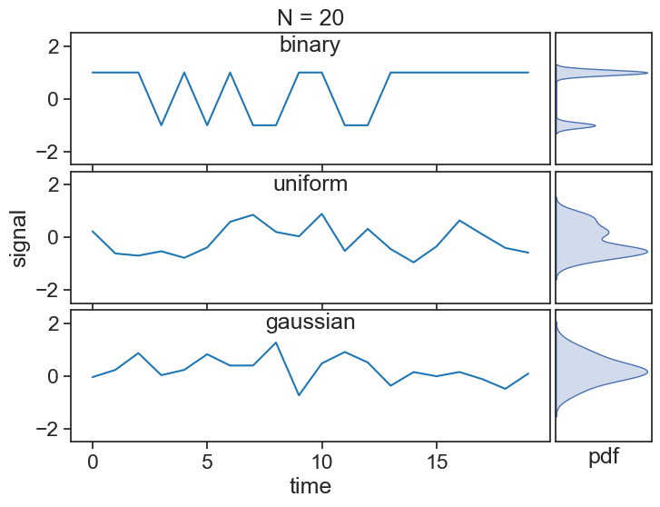
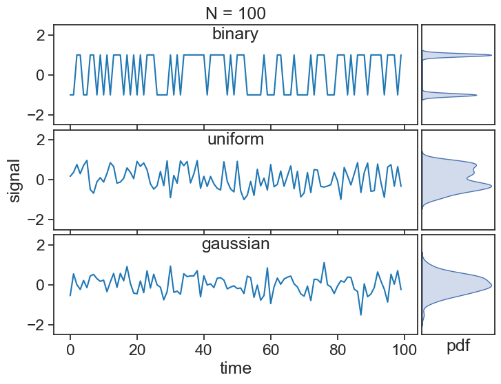
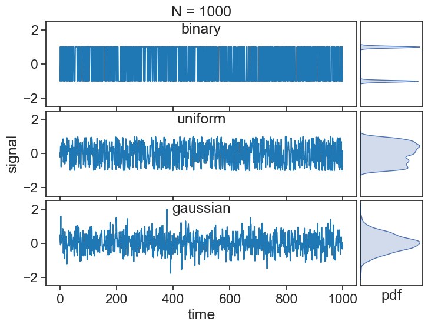
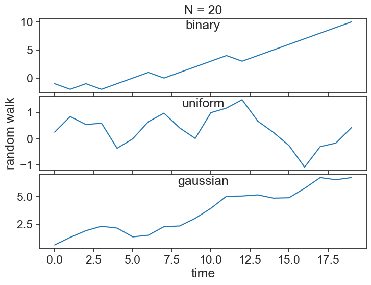
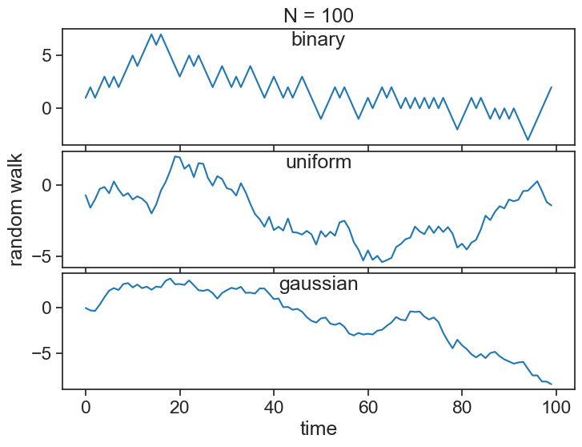
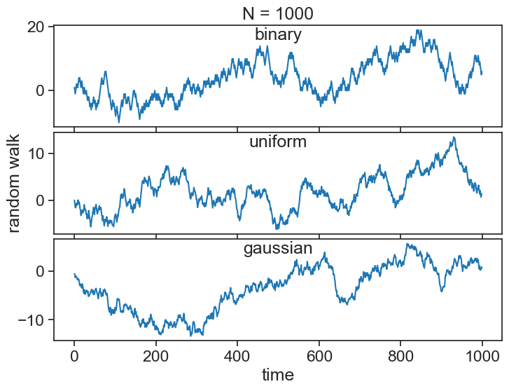

23 random variables
This lecture is partially based on Brockwell and Davis (2016, chaps. 1, 2). Also this.
A random variable is a mathematical concept used in probability theory and statistics to represent and quantify uncertainty. It is a variable whose possible values are outcomes of a random phenomenon. In other words, it’s a variable that can take on different values with certain probabilities associated with each value.
discrete random variable
There is a countable number of distinct outcomes. The obvious examples are coins and dice, which have 2 and 6 possible outcomes.
continuous random variable
Any value within a range is possible. The position of a horizontal game spinner is a good example.
23.1 white noise
See below three time series made up by three different stochastic (random) processes. All terms in each of the series are independent and identically distributed (iid), meaning that they are uncorrelated and taken from the same underlying distribution.

As we increase the length of the series, the statistics of each series reveal hints of the distributions they were sampled from:


The mathematical way of describing these series is thus: \{X\} represents the stochastic process (binary, uniform, etc), from which a specific series is randomly drawn:
\{ x_0, x_1, x_2, \cdots \}
All of these processes above have zero mean (\mu=0) and a finite variance (\sigma^2), which qualify them as white noise.
23.2 random walk
A random walk S_t (for t=0,1,2,\cdots) is obtained by cumulatively summing iid random variables:
S_t = X_1 + X_2 + X_3 + \cdots + X_{t-1} + X_t
where S_0=0.
In the case of a binary process, you can think of the random walk as the position of a person who takes a step forward every time a coin toss yields heads, and a step backward for tails. Of course, by differencing the random walk, we can recover the original random sequence:
X_i = S_{i} - S_{i-1}.
See below the random walks associated with the three white noise processes from before:
  